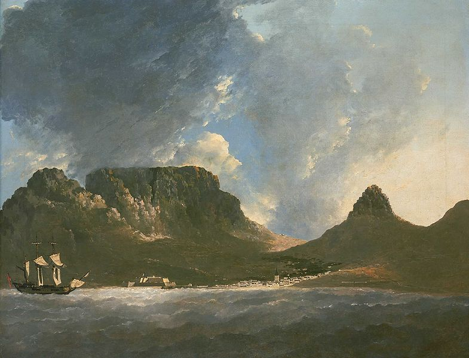

When Carl Linnaeus published Sytema Naturae in 1735, he revolutionized the field of biology. In a frenzied race to bring order to life on the planet, Linnaeus and his apostles scoured the globe for new species

Scientists and the Cape
Many of the travel writers who visited the Cape were botanists by profession. Anders Sparrman and C.P. Thunberg were both students of Carl Linnaeus. Francis Masson and William Burchell were botanists as well. Classification was their specialty, and they tended to ascribe traits to the racial and cultural groups they encountered.